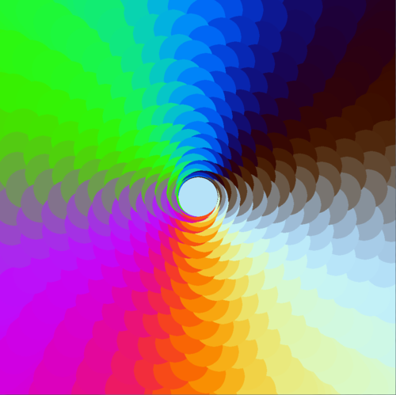
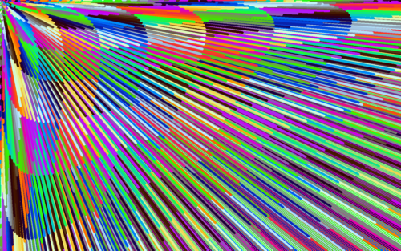

Kyle Johnsen
RPI Student in Game Design + Comp Sci
email: kaelstrom@gmail.com
phone: 203-648-8586
My Old PortfolioWelcome to my personal site, where I post coding projects worth sharing.
Waypoint Generator (In Progress)
Say hello to the crossroads between pygame and a compulsion to play with colors.
It's a particle system where particles are created centered on the mouse, and fly outwards based on timing, heavily affected by sine and cosine and a bit of modulo. There's a few variables modifying everything, which can be changed by hitting up and down. T toggles trails, and space cycles through a few modes. You can make some pretty cool stuff.

Here's the code (you'll need pygame installed to run it):
import pygame
import sys
import math
from random import randint
#fill whatever the current resolution is
screen = pygame.display.set_mode((0,0) , pygame.FULLSCREEN)
SCREEN_SIZE = (pygame.display.Info().current_w,pygame.display.Info().current_h)
shots = []
count = 0
mode = 0
trails = 1
toggle = False
mod = 1
x = 500
y = 500
#a single particle that travels at an x and y velocity set when created
class shot():
def __init__(self, x, y):
self.x = x + math.sin(count/80.0)*00
self.y = y + math.cos(count/100.0)*00
if mode == 0:
self.vy = math.tan(math.sin(mod*count))
self.vx = math.tan(math.cos(mod*count))
self.radius = 5
self.color = (125+125*math.sin(count),125+125*math.sin(2*count),125+125*math.sin(3*count))
if mode == 1:
self.vy = math.tan(math.sin(mod*count))
self.vx = math.tan(math.cos(mod*count))
self.radius = 50
self.color = (125+125*math.sin(count),125+125*math.sin(2*count),125+125*math.sin(3*count))
if mode == 2:
self.vy = math.sin(mod*count)
self.vx = math.cos(mod*count)
self.radius = 5
self.color = (125+125*math.sin(count),125+125*math.sin(2*count),125+125*math.sin(3*count))
if mode == 3:
self.vy = math.sin(math.sin(mod*count))
self.vx = math.cos(math.cos(mod*count))
self.radius = 5
self.color = (125+125*math.sin(count),125+125*math.sin(2*count),125+125*math.sin(3*count))
if mode == 4:
self.vy = math.cos(math.sin(mod*count))
self.vx = math.sin(math.cos(mod*count))
self.radius = 5
self.color = (125+125*math.sin(count),125+125*math.sin(2*count),125+125*math.sin(3*count))
if mode == 5:
self.vy = math.pow(math.tan(math.sin(mod*count)), 2)
self.vx = math.pow(math.tan(math.cos(mod*count)), 2)
self.radius = 5
self.color = (125+125*math.sin(count),125+125*math.sin(2*count),125+125*math.sin(3*count))
def act(self):
self.move()
def move(self):
self.x += self.vx
self.y += self.vy
def draw(self):
#pygame.draw.circle(screen, self.color, (int(self.x), int(self.y)), self.radius, 0)
pygame.draw.rect(screen, self.color, (int(self.x), int(self.y), 10, 10), 0)
def dostuff():
global trails
global mode
global mod
global x
global y
global toggle
if toggle and count % 77 == 0:
mod += 1
for event in pygame.event.get():
if event.type == pygame.QUIT:
sys.exit()
if event.type == pygame.MOUSEMOTION:
x = event.pos[0]
y = event.pos[1]
if event.type == pygame.KEYDOWN:
if event.key == pygame.K_SPACE:
mode = (mode + 1) % 6
if event.key == pygame.K_a:
toggle = not toggle
if event.key == pygame.K_UP:
mod = mod + 1
if event.key == pygame.K_DOWN:
mod = mod - 1
if event.key == pygame.K_LEFT or event.key == pygame.K_RIGHT:
mod = 1
if event.key == pygame.K_t:
trails = trails * -1
if event.key == pygame.K_ESCAPE:
sys.exit()
shots.append(shot(x, y))
for s in shots:
s.act()
if s.x < -s.radius or s.y < -s.radius or s.x > SCREEN_SIZE[0] + s.radius or s.y > SCREEN_SIZE[1] + s.radius:
shots.remove(s)
def view():
if trails == -1:
pygame.draw.rect(screen, (0,0,0), (0,0,SCREEN_SIZE[0],SCREEN_SIZE[1]))
for s in shots:
s.draw()
pygame.display.flip()
while True:
count += 1
dostuff()
view()
And here's an HTML5 + javascript input mapping simulation. I think mapping to acceleration feels best by far. It's worth noting theres some drag being applied. The input might be a bit finicky due to browsers keeping around the onKeyUp event for too long for multiple keypresses.
Heres the code:
// Kyle Johnsen
// script comparing mapping
// input to position, velocity,
// acceleration, and jerk
var canvas = document.getElementById("surface");
var ctx = canvas.getContext("2d");
var randominput = true;
var pos_cap = 90;
var vel_cap = 10;
var acc_cap = 10;
var jerk_cap = 10;
var randx = 0;
var randy = 0;
var horiz = 0;
var vert = 0;
var motion = [[[50, 50, pos_cap], [0,0,vel_cap], [0,0,acc_cap], [0,0,jerk_cap]],
[[50, 50, pos_cap], [0,0,vel_cap], [0,0,acc_cap], [0,0,jerk_cap]],
[[50, 50, pos_cap], [0,0,vel_cap], [0,0,acc_cap], [0,0,jerk_cap]],
[[50, 50, pos_cap], [0,0,vel_cap], [0,0,acc_cap], [0,0,jerk_cap]]];
function on_enter_frame(){
ctx.fillStyle = "#FFFFFF";
ctx.fillRect(0,0,1000,1000);
randx = Math.random()-.5;
randy = Math.random()-.5;
for (i=0;i0;d--) {
if(d == 1) { //apply drag
motion[i][d][0]*=.9;
motion[i][d][1]*=.9;
}
motion[i][d-1][0] = Math.min(Math.max(motion[i][d-1][0] + motion[i][d][0], -motion[i][d-1][2]), motion[i][d-1][2]);
motion[i][d-1][1] = Math.min(Math.max(motion[i][d-1][1] + motion[i][d][1], -motion[i][d-1][2]), motion[i][d-1][2]);
}
//hit a wall, reset
if(motion[i][0][0] == -pos_cap || motion[i][0][0] == pos_cap) {
for (d=1;d<4;d++) {
motion[i][d][0] = 0;
}
}
if(motion[i][0][1] == -pos_cap || motion[i][0][1] == pos_cap) {
for (d=1;d<4;d++) {
motion[i][d][1] = 0;
}
}
if(i == 0)
ctx.fillStyle="#0040F0";
else if(i == 1)
ctx.fillStyle="#F040F0";
else if(i == 2)
ctx.fillStyle="#00FF30";
else
ctx.fillStyle="#F04000";
ctx.fillRect(motion[i][0][0] + 95, motion[i][0][1] + i*200 + 95, 10, 10);
}
ctx.fillStyle = "#000000";
ctx.fillText("press 'i' to toggle showing random input", 210, 10);
ctx.fillText(" vs getting input from WASD", 210, 25);
if(randominput) {
ctx.fillText("Mapping random to position", 210, 50);
ctx.fillText("Mapping random to velocity", 210, 250);
ctx.fillText("Mapping random to acceleration", 210, 450);
ctx.fillText("Mapping random to jerk", 210, 650);
}
else {
ctx.fillText("Mapping input to position", 210, 50);
ctx.fillText("Mapping input to velocity", 210, 250);
ctx.fillText("Mapping input to acceleration", 210, 450);
ctx.fillText("Mapping input to jerk", 210, 650);
}
for(i = 0; i < 4; i++) {
ctx.fillText(" x: " + motion[i][0][0].toFixed(2), 220, i*200+80); ctx.fillText(" y: " + motion[i][0][1].toFixed(2), 300, i*200+80);
ctx.fillText("vx: " + motion[i][1][0].toFixed(2), 220, i*200+100); ctx.fillText("vy: " + motion[i][1][1].toFixed(2), 300, i*200+100);
ctx.fillText("ax: " + motion[i][2][0].toFixed(2), 220, i*200+120); ctx.fillText("ay: " + motion[i][2][1].toFixed(2), 300, i*200+120);
ctx.fillText("jx: " + motion[i][3][0].toFixed(2), 220, i*200+140); ctx.fillText("jy: " + motion[i][3][1].toFixed(2), 300, i*200+140);
}
}
document.addEventListener('keydown', function(event) {
if(event.keyCode == 65) {
horiz = -1;
}
else if(event.keyCode == 87) {
vert = -1;
}
else if(event.keyCode == 83) {
vert = 1;
}
else if(event.keyCode == 68) {
horiz = 1;
}
else if(event.keyCode == 73) {
randominput = !randominput;
}
});
document.addEventListener('keyup', function(event) {
if(event.keyCode == 65) {
horiz = 0;
}
else if(event.keyCode == 87) {
vert = 0;
}
else if(event.keyCode == 83) {
vert = 0;
}
else if(event.keyCode == 68) {
horiz = 0;
}
});
setInterval(on_enter_frame,25);